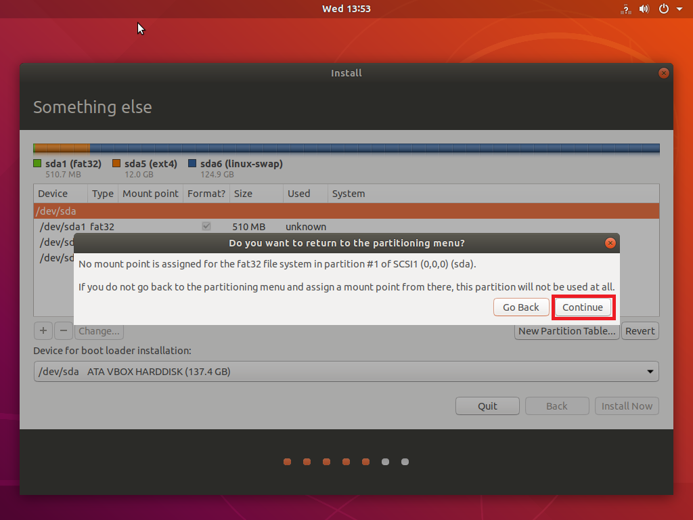
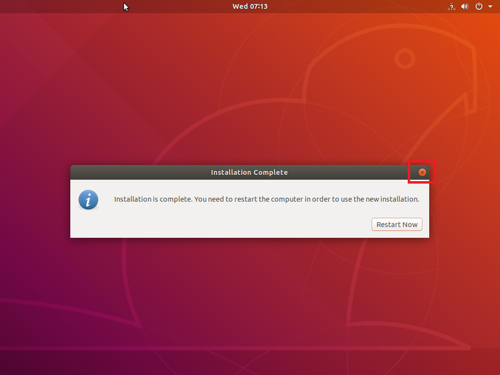

Boot Ubuntu¶
SBL can boot Ubuntu Linux using SBL with default OS loader. This page provides a step-by-step guide how to do so.
The following steps have been verified with Ubuntu Linux 18.04 LTS (64-bit).
STEP 1: Build SBL
STEP 2: Flash IFWI image to the board
STEP 3: Download Ubuntu Desktop 18.04 ISO image from Ubuntu website
STEP 4: Create a USB flash drive from the ISO image with Rufus tool
STEP 5: Boot from USB flash drive
From serial console, boot to shell and select USB boot:
boot -> s -> 0 -> 3 -> q
Continue boot by typing “exit” in the shell
STEP 6: Follow instructions to install Ubuntu
During this step, it is required to create a custom partition layout for SBL to boot after installation.
- Boot Menu should show up on serial console. Select ‘1’ to install Ubuntu.
- Follow the instruction to install Ubuntu as normal.
{kind=link}
- During the “Installation type:” page in installation, select “Something else” option.
{kind=link}
- Create a new FAT32 partition before installation
{kind=link}
It might warn you about no mount point for FAT32 partition, just press “Continue” button.
{kind=link}
5. Finish the installation unless it askes to reboot. Don’t hit reboot button, instead, press the ‘x’ to close the message box. It returns to the Ubuntu desktop.
{kind=link}
- Open a terminal console and copy kernel files to the FAT partition created in previous step
Run:
sudo mount /dev/mmcblk1p1 /mnt <-- mmcblk1p1 is the FAT partition on eMMC. Change it to the actual partition name in your board
sudo cp /cdrom/casper/vmlinuz /mnt
sudo cp /cdrom/casper/initrd.lz /mnt/initrd
sudo echo "root=/dev/mmcblk1p2 ro quiet splash" > /mnt/config.cfg <-- mmcblk1p2 is the EXT4 partition on eMMC. Change it to the actual partition name on your board
sudo unmount /mnt <-- IMPORTANT: this ensures config.cfg is written to eMMC
- Remove USB flash drive and reboot
SBL should boot to Ubuntu automatically from eMMC now.